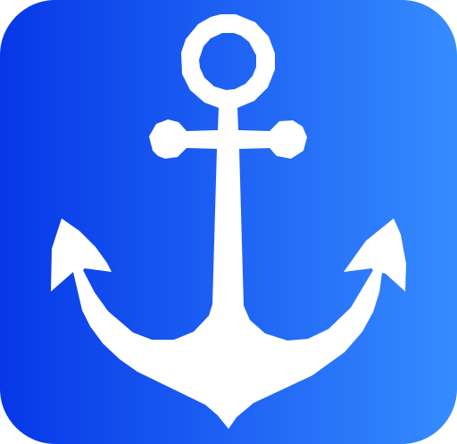

Send file
Received files
Incoming files will appear here.

Paired devices
Manage trusted devices here. Removing the last one returns to setup.

Connection & chat
Chat starts when your devices connect.
Recent connections and transfers
Settings
Language
Choose your preferred language for the application.
GitHub updates (Windows)
Check the official Fileport GitHub Releases repository for a newer PC version. Only update checks and downloads need internet; local transfers remain offline.
Fileport uses encrypted FPTP/1 communication over your local network.
About Fileport
Your Files. Your Devices. Your Freedom.
Direct file sharing and chat
Fileport connects a Windows computer and an Android device on the same reachable local network. File transfers and messages travel directly between paired devices, without cloud storage.
FPTP/1 encryption is experimental and has not undergone an independent third-party security audit. Always verify the six-digit pairing code.
© 2026 Fileport · Official design identity